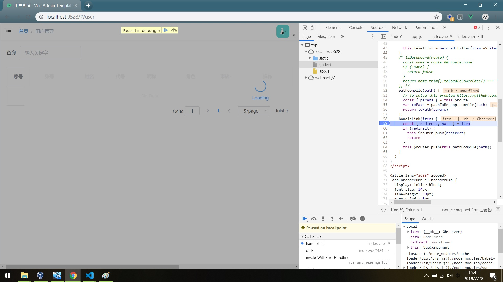

Vuejs调试入门
每个应用，不论大小，都需要理解程序是如何运行失败的。下面将探讨调试浏览器中运行的通过 Vue CLI 生成的 Vue.js 应用程序。
前提条件
- Chrome
- Vue CLI
- Vue Devtools
浏览器中展示源代码
在可以从 VS Code 调试你的 Vue 组件之前，你需要更新 webpack 配置以构建 source map。做了这件事之后，我们的调试器就有机会将一个被压缩的文件中的代码对应回其源文件相应的位置。这会确保你可以在一个应用中调试，即便你的资源已经被 webpack 优化过了也没关系。
打开 config/index.js 并找到 devtool 属性。将其更新为：
如果你使用的是 Vue CLI 2，请设置并更新 config/index.js 内的 devtool 属性：
1 | devtool: 'source-map', |
如果你使用的是 Vue CLI 3，请设置并更新 vue.config.js 内的 devtool 属性：
1 | module.exports = { |
调试方法
在Chrome浏览器中调试
利用Chrome浏览器的开发工具，在Vuejs应用源代码中设置断点，进行调试。

简单的 debugger 语句
可以直接在代码中使用原生的 debugger 语句。如果你选择了这种方式，请千万记得当你调试完毕之后把这个语句移除。
1 | <script> |
参考链接
- 在 VS Code 中调试,by vuejs.
- 下载并安装vue-devtools（详细步骤）,by 鲤鱼砸龙门.
- vue调试工具vue-devtools的安装,by web前端.